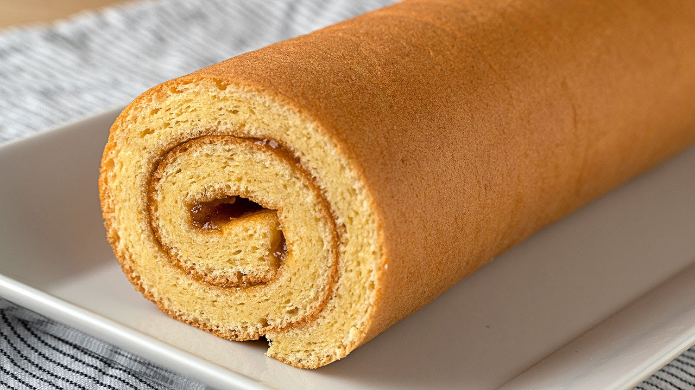

Queque de quinua con chispas
Nutritivo, esponjoso y con un toque especial de chispas de chocolate.
Bs. 18.00🧁 El sabor inigualable dulce momento 🧁
El sabor casero que alegra tus mañanas. Horneamos cada día con ingredientes naturales, tradición y la mejor calidad artesanal.
Nutritivo, esponjoso y con un toque especial de chispas de chocolate.
Bs. 18.00
La clásica combinación perfecta de vainilla y chocolate.
Bs. 18.00
Saludable y delicioso, elaborado con avena integral y con un toque de chocolate para darle más sabor.
Bs. 18.00
Masa suave y rellena de abundante queso derretido tradicional.
Bs. 20.00
Rellenas de abundante queso con una masa suave y artesanal.
Bs. 2.00Esponjosos pastelitos decorados con chispas de colores.
Bs. 1.50
Bizcochuelo enrollado relleno de manjar (dulce de leche) y espolvoreado con azúcar glass.
Bs. 30.00